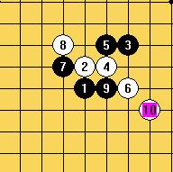

风尘老师第三届全团赛预测分析
#1 风尘老师第三届全团赛预测分析 作者：邓飞 发表时间：2009-5-21 22:47:22
2009全国五子团体锦标赛将于5月28-30日在北京掀起硝烟战火，从论坛上发布的参赛选手小道消息版
来看,本次各个省队都派出了非常强大的阵容,个个都是棋界精英名流,只东道主北京队就派出了十只队伍参
赛,,相信他们这次一定能取得一个不错的成绩.至少有两支队伍具备了夺冠的实力.
炫飞家族做为一个网络社团，本着对五子棋的热爱与挚挚不懈的追求，又一次组团参加全团赛，本着
锻炼、交流、学习的态度派出了两支队伍。预祝他们能取得好的成绩.
下面预测一下本届全团赛开局:
一,平衡局:仍是以瑞星、疏星为主（瑞星偏重大）
1>瑞星开局
(1)比较被许多人选用的12
(2)比较古老的12
(3)团角的12
(4)还有一个可以下一下的12
或者还有个别11手变化的下法
另外也应当注意,瑞星后面分支的一些强骗,例如下面这个图走到这里黑必胜,后面有个白强骗
2>疏星开局
疏星现在被越来越多人不愿意采用的一种开局,属于几乎要淘汰的平衡局
例如这个白10已被许多人证明为黑必胜

二,激烈开局:松月、山月
松月、山月开局也是现在许多棋手喜爱开的一种优势局,因为它们可以变通为许多其它开局分支,也是比较考验棋手的一个棋局。
例如：比较强的一个四
［ 茗弈小刀 于 2009-5-22 9:33:41 时奖励此帖[金币加 20 威望加1］
［ 炫飞冰弦 于 2009-5-23 12:03:30 时花20金币送鲜花一朵］
#2 Re:风尘老师第三届全团赛预测分析 作者：流逝 发表时间：2009-5-22 15:34:02

#3 Re:风尘老师第三届全团赛预测分析 作者：方圆之外 发表时间：2009-5-22 19:41:25
我估计开黑优的人N多。#4 Re:风尘老师第三届全团赛预测分析 作者：炫飞冰弦 发表时间：2009-5-23 12:03:06
 飞飞好棒
飞飞好棒
#5 Re:风尘老师第三届全团赛预测分析 作者：花月痕 发表时间：2009-5-23 20:20:05
强大的风尘老师,不晓得会不会情场得意杀场失利....#6 Re:风尘老师第三届全团赛预测分析 作者：南姑钉子户 发表时间：2009-5-24 0:02:38
天天当新郎 夜夜换新娘
#7 Re:风尘老师第三届全团赛预测分析 作者：非鸟 发表时间：2009-5-24 0:56:15
哪个好心人发下强１怎么杀